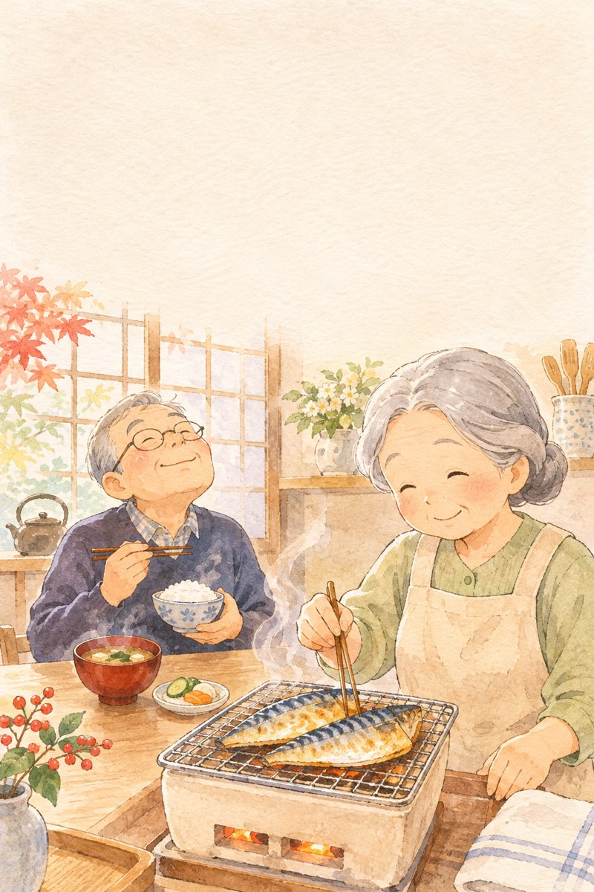
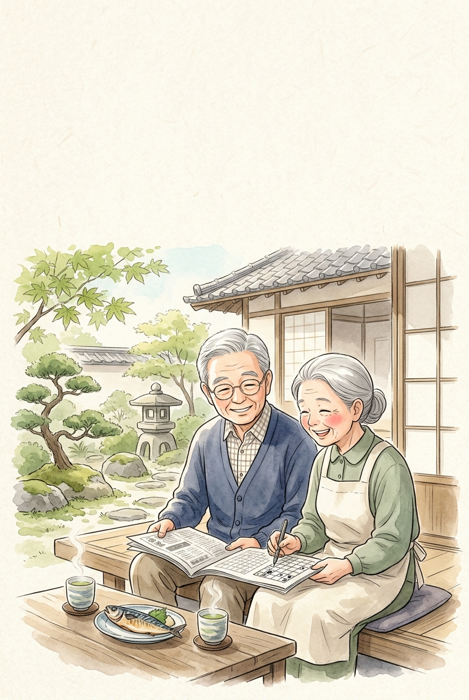
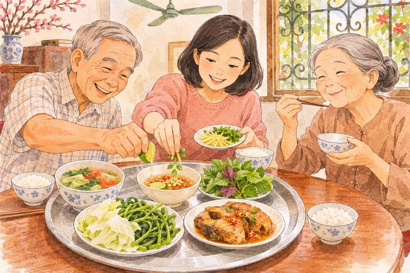
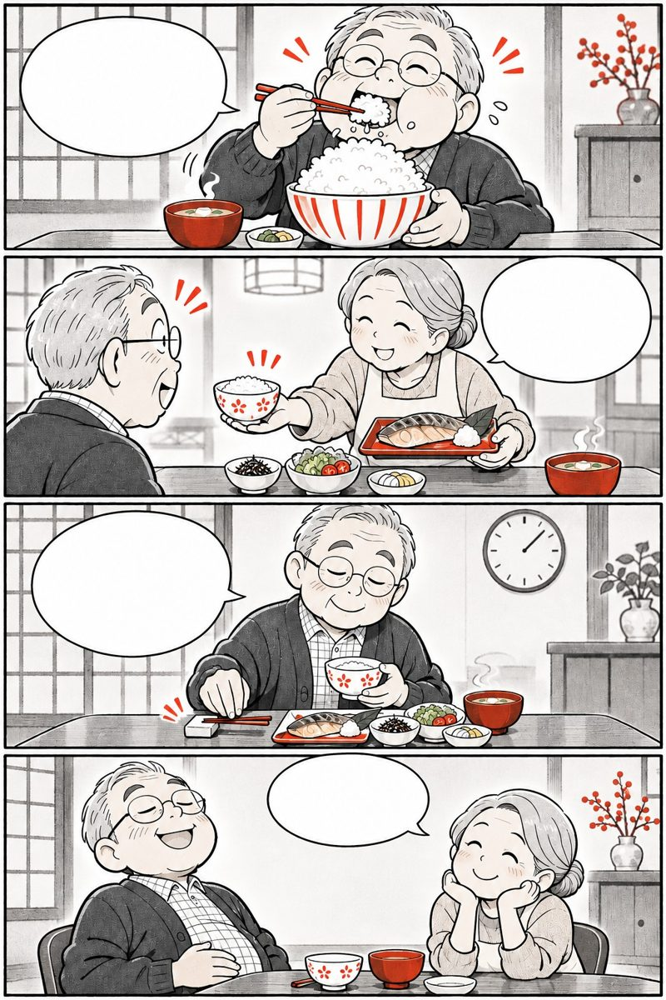
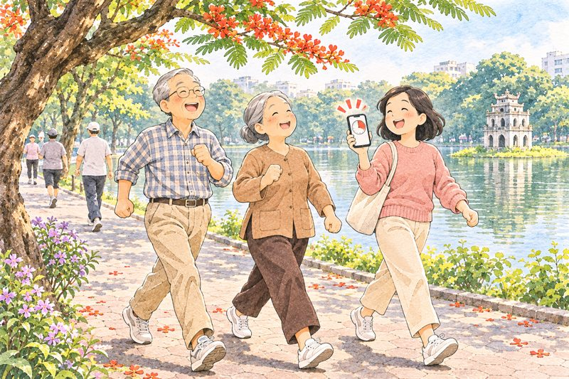

Omega-3mạch êm, não sáng kiểu Nhật
Cơ thể không tự tạo ra được DHA và EPA. Người Nhật nuôi dưỡng mạch máu, đôi mắt và trí nhớ tuổi 50+ từ cá biển xanh và dầu cá biển sâu.
Mục lục
Bấm vào chương để đọc.

Mạch máu mềm
trí nhớ sáng
Vì sao tuổi 50+ khát chất béo Omega-3?
aozakana to omega-3
Cơ thể người không tự làm ra được DHA và EPA — muốn mạch máu êm và đầu óc minh mẫn, phải đưa từ bữa ăn vào mỗi ngày.
Những con số đáng nhớ
người theo dõi 10 năm: nhóm ăn cá biển đều giảm hơn 50% nhồi máu cơ tim
tổng lượng DHA + EPA khuyến nghị mỗi ngày cho người trung niên, cao tuổi
là DHA — dưỡng chất giữ màng tế bào thần kinh mềm dẻo để nhớ nhanh
lượng DHA/EPA trung bình mỗi ngày ở người lớn tuổi kiêng khem hoặc ít ăn cá

Tuổi 50+, kiêng mỡ heo là đúng, nhưng kiêng luôn cả dầu cá Omega-3 thì mạch máu và não bộ lại bị đói!
Nguồn: Nghiên cứu JPHC Nhật Bản (Iso H. et al., Circulation 2006); Tiêu chuẩn Dinh dưỡng Nhật Bản (MHLW).
Ông Sato hết sợ quên vặt
 Dạo này hay quên kính quá!
Ăn cá thu giàu DHA nhé!
Thịt cá mềm, thơm quá!
Meo… ông ăn sạch đĩa rồi!
Dạo này hay quên kính quá!
Ăn cá thu giàu DHA nhé!
Thịt cá mềm, thơm quá!
Meo… ông ăn sạch đĩa rồi!
Hay quên và mỏi mắt tuổi xế chiều thường là lời nhắc tế bào não đang thiếu chất béo tốt DHA, EPA.
Hai người anh em: EPA và DHA

Trong gia đình Omega-3 từ biển cả, EPA và DHA luôn đi đôi với nhau nhưng mỗi chất đảm nhận một trọng trách riêng:
 EPA: mạch êm, máu thông
DHA: não sáng, mắt tinh
EPA: mạch êm, máu thông
DHA: não sáng, mắt tinh
- EPA — “người dọn đường mạch máu”: giúp giảm mỡ máu xấu (Triglyceride), giữ thành động mạch mềm mại và hạn chế tiểu cầu kết dính thành cục máu đông.
- DHA — “viên gạch xây não và võng mạc”: đi qua hàng rào máu não, làm mềm màng tế bào thần kinh để truyền tín hiệu trí nhớ nhanh và nuôi điểm vàng đôi mắt.
- Dịu phản ứng viêm âm thầm: Omega-3 tạo ra các chất Resolvin tự nhiên giúp làm dịu tình trạng viêm mạn tính ở mạch máu và khớp tuổi già.
Nguồn: Hiệp hội Tim mạch Nhật Bản (JCS) & Viện Nghiên cứu Dinh dưỡng Quốc gia Nhật Bản.
Mỡ máu cao thì phải kiêng cả dầu cá?

Nhiều cô chú thấy xét nghiệm mỡ máu cao liền kiêng sạch mọi thứ có chữ “dầu”. Cùng phân biệt rõ:
Mỡ máu cao phải kiêng cả dầu cá
Mỡ heo làm tăng mỡ máu, còn EPA/DHA trong dầu cá lại giúp kéo giảm Triglyceride
Ăn dầu đậu nành, dầu mè là đủ DHA
Dầu thực vật chỉ có ALA; cơ thể người lớn tuổi đổi được dưới 1–5% sang DHA, EPA
Cá đồng, cá nước ngọt nào cũng giống cá biển
Cá biển lưng xanh (cá thu, cá nục, cá mòi, cá hồi) giàu DHA/EPA gấp 5–10 lần
Chỉ trẻ nhỏ đi học mới cần bổ sung DHA
Não và mắt người trên 50 tuổi cần DHA mỗi ngày để giữ trí nhớ và chống khô mờ mắt
Nguồn: Hướng dẫn Phòng ngừa Xơ vữa Động mạch của Hội Xơ vữa Động mạch Nhật Bản (JAS).
Tự rà 9 dấu hiệu thiếu Omega-3

Bấm vào những câu đúng với bố mẹ hoặc chính mình trong 1 tháng qua:
Từ 2 dấu hiệu trở lên là lời nhắc nên tăng bữa cá biển và bổ sung đều đặn DHA, EPA mỗi ngày.

EPA giữ mạch
êm như lụa
Bài học từ những làng chài Nhật Bản
kekkan no wakasa to EPA
Ở Nhật có một chỉ số xét nghiệm máu rất nổi tiếng tên là tỷ lệ EPA/AA — thước đo độ dẻo dai của mạch máu.
Phát hiện từ làng chài ít bệnh mạch vành
Từ thập niên 1980, nhóm giáo sư Hirai Aizan (Đại học Chiba) và nghiên cứu JELIS trên 18.645 người Nhật đã giải mã vì sao ngư dân làng chài Nhật rất ít bị tắc mạch tim và nhồi máu não:
- Mỡ máu
EPA giúp gan giảm tổng hợp mỡ xấu Triglyceride từ 15–30%, làm dòng máu bớt đặc quánh sau bữa ăn.
- Thành mạch
EPA thấm vào lớp tế bào nội mạc, giúp thành động mạch co giãn mềm mại theo từng nhịp đập của tim.
- Trôi êm
Giúp hồng cầu dễ uốn cong đi qua các mao mạch nhỏ ли ti và giảm nguy cơ tiểu cầu vón cục bất thường.

Trong nghiên cứu JELIS, bổ sung EPA đều đặn giúp giảm thêm 19% biến cố mạch vành lớn ở người có mỡ máu cao!
Nguồn: Yokoyama M. và cộng sự (Nghiên cứu JELIS, Nhật Bản), tạp chí The Lancet, 2007.
Lấy chất béo tốt đẩy lùi mỡ xấu
 Kiêng mỡ rồi sao máu vẫn nhiễm mỡ?
Phải thêm EPA từ cá biển ông ạ!
Cá hấp gừng vừa ngọt vừa lành!
Mạch máu êm, người khỏe hẳn!
Kiêng mỡ rồi sao máu vẫn nhiễm mỡ?
Phải thêm EPA từ cá biển ông ạ!
Cá hấp gừng vừa ngọt vừa lành!
Mạch máu êm, người khỏe hẳn!
Mạch máu khỏe không nhờ nhịn ăn kham khổ, mà nhờ đổi từ mỡ bão hòa sang chất béo tốt Omega-3.
Bộ tứ “cá lưng xanh” giàu EPA & DHA
Người Nhật gọi nhóm cá biển có sống lưng xanh sẫm, bụng bạc là Aozakana (Thanh ngư) — kho báu Omega-3 tự nhiên ngay ngoài chợ:
 Cá thu, cá mòi: ~2.000 mg DHA+EPA/100g
Cá nục, cá trích: rẻ mà cực bổ mạch
Cá thu, cá mòi: ~2.000 mg DHA+EPA/100g
Cá nục, cá trích: rẻ mà cực bổ mạch
- Phần thịt sẫm màu sát dưới da (Chiai): là nơi cá tích trữ nhiều máu, sắt, Taurine và lượng EPA/DHA dồi dào nhất — đừng gạt bỏ đi.
- Cân bằng Omega-3 và Omega-6: bớt các món chiên ngập dầu thực vật (giàu Omega-6 gây viêm) và tăng cá biển giúp mạch máu trẻ lâu.
Nguồn: Bảng Thành phần Thực phẩm Chuẩn Nhật Bản (MEXT).

Rán cá thật giòn có giữ được Omega-3?
Dầu cá DHA, EPA rất nhạy cảm với nhiệt độ quá cao. Cách nấu quyết định lượng dưỡng chất còn lại trên đĩa:
Hao hụt nhiều
- Chiên ngập dầu lửa to làm mất tới 50% DHA/EPA
- Rán đi rán lại bằng chảo dầu cũ cháy sẫm
- Bỏ hết phần nước kho cá hoặc thịt sẫm dưới da
Giữ trọn dưỡng chất
- Hấp gừng hành hoặc kho nhỏ lửa với cà chua
- Áp chảo nhanh hoặc nướng vừa chín tới
- Ướp gừng, nghệ, lá tía tô giúp chống oxy hóa dầu cá
Nguồn: Viện Nghiên cứu Thủy sản Quốc gia Nhật Bản.
4 mẹo giữ trọn Omega-3 trong gian bếp
Con cá nục, cá bạc má bình dân ở chợ Việt Nam nếu nấu đúng cách bổ chẳng kém cá hồi đắt tiền:
Mắt trong, mang đỏ tươi, ấn vào thịt có độ đàn hồi săn chắc
Mua về làm sạch ngay, chia từng bữa cất ngăn đá để dầu cá không ôi
Chất Lycopene trong cà chua và Gingerol trong gừng bảo vệ EPA/DHA
Ngày nào không ăn cá biển, bổ sung 3 viên Omega-3 sau bữa ăn
Làm ngay
- Duy trì 2–3 bữa cá biển mỗi tuần cho cả gia đình
- Vắt thêm vài giọt chanh tươi lên miếng cá nướng
Đừng làm
- Kho cá quá mặn nhiều muối làm tăng huyết áp
- Để cá đã rã đông ngoài nhiệt độ phòng quá 2 giờ
Nguồn: Hiệp hội Dinh dưỡng Nhật Bản (JDA).
Tính lượng Omega-3 nhà mình ăn mỗi tuần
Mỗi khúc cá lưng xanh (80g) cung cấp khoảng 1.200–1.500 mg DHA+EPA. Nếu ăn dưới 3 bữa cá biển/tuần, cơ thể thường thiếu hụt so với mốc 1.000 mg/ngày của Nhật Bản.

DHA nuôi não
và đôi mắt sáng
Giữ sự minh mẫn và tinh tường tuổi 60+
nō to me no eiyō · DHA
Trong khi EPA chăm lo lòng mạch máu, thì DHA là dưỡng chất hiếm hoi đi thẳng qua hàng rào máu não để xây dựng màng tế bào thần kinh và võng mạc.
Bí quyết đọc báo sáng ở tuổi 80 của người Nhật
- Nghiên cứu Obu (Aichi)
Viện Lão khoa Quốc gia Nhật Bản (NCGG) theo dõi người trên 65 tuổi: nhóm có nồng độ DHA trong máu cao ít bị teo vùng hải mã hơn hẳn.
- Khớp thần kinh nhạy bén
DHA giữ cho lớp màng bao quanh khớp nối thần kinh (Synapse) mềm mại, giúp ông bà nhớ tên người, nhớ lời dặn nhanh hơn.
- Đôi mắt đỡ khô mỏi
Kết hợp DHA và EPA giúp lớp phim nước mắt bền hơn, giảm cảm giác cay mắt, chảy nước mắt sống khi ra gió hay đọc chữ nhỏ.
Vừa bổ sung DHA từ bữa ăn, vừa đọc sách báo và trò chuyện mỗi ngày là cách tập thể dục tốt nhất cho não!
Nguồn: Viện Nghiên cứu Lão khoa và Lão suy Quốc gia Nhật Bản (NCGG, Obu Study of Health Promotion for the Elderly).
Ông bà Sato mắt sáng, tinh thần vui
 Mắt mỏi, chẳng muốn đọc báo…
Bổ sung DHA và ra vườn nhé!
Mắt nhìn rõ cả nụ hoa nhỏ!
Đầu óc tỉnh táo suốt cả ngày!
Mắt mỏi, chẳng muốn đọc báo…
Bổ sung DHA và ra vườn nhé!
Mắt nhìn rõ cả nụ hoa nhỏ!
Đầu óc tỉnh táo suốt cả ngày!
Chăm sóc đôi mắt và trí nhớ từ tuổi 50 giúp ông bà giữ trọn niềm vui tự đọc sách, chơi cờ cùng con cháu.
Vì sao thiếu DHA lại làm não “chậm sóng”?
Tế bào thần kinh nói chuyện với nhau qua hàng tỷ điểm tiếp xúc nhỏ. Độ mềm của màng tế bào quyết định tốc độ truyền tin:
 Đủ DHA & EPA: màng tế bào mềm, truyền tin nhạy
Thiếu hụt: màng cứng, máu lên não kém
Đủ DHA & EPA: màng tế bào mềm, truyền tin nhạy
Thiếu hụt: màng cứng, máu lên não kém
- Nuôi dưỡng vi mạch não: não chỉ nặng 2% cơ thể nhưng tiêu thụ tới 20% lượng máu và oxy; EPA + DHA giúp các mạch máu li ti nuôi não luôn thông suốt.
- Bảo vệ điểm vàng võng mạc: tế bào thị giác phải tiếp xúc với ánh sáng liên tục mỗi ngày; DHA giúp tái tạo đĩa quang học để mắt nhìn rõ nét và phân biệt màu sắc tốt.
- Hỗ trợ giấc ngủ êm: đủ DHA giúp điều hòa nhịp tiết Melatonin tự nhiên vào ban đêm, giúp người lớn tuổi bớt trằn trọc.
Nguồn: Hiệp hội Nhãn khoa Nhật Bản & Hội Thần kinh học Nhật Bản.

Uống DHA vài hôm là nhớ ngay lập tức?
DHA không phải chất kích thích thần kinh tức thời như cà phê, mà là nguyên liệu xây dựng lại màng tế bào bền vững:
Tưởng nhầm
- Uống 3–5 ngày đã đòi hết quên ngay
- Chỉ uống viên bổ mà suốt ngày ngồi xem tivi thụ động
- Mỏi mắt chỉ cần nhỏ thuốc mắt co mạch liên tục
Hiểu đúng
- Cần duy trì đều đặn 8–12 tuần để màng tế bào đổi mới
- Kết hợp đọc sách, tính nhẩm, trò chuyện mỗi ngày
- Chườm ấm mắt 5 phút buổi tối + bổ sung DHA/Astaxanthin
Dinh dưỡng DHA + Thể dục não “Nō-tore”
Giáo sư Kawashima Ryuta (Đại học Tohoku) khuyên người lớn tuổi kết hợp bữa ăn giàu DHA với 2 thói quen nhỏ đánh thức thùy trán:
Buổi sáng
- Ăn sáng đủ đạm + uống Omega-3 ngay sau bữa ăn
- Đọc thành tiếng 1 trang báo hoặc trang sách trong 3 phút
- Tính nhẩm tiền đi chợ không dùng máy tính
Buổi chiều
- Đi bộ 20 phút vừa đi vừa kể tên các loài cây, món ăn
- Chườm khăn ấm 40°C lên mắt 5 phút giúp thư giãn
- Trò chuyện cùng con cháu hoặc bạn già
Đọc to thành tiếng và viết tay 3 dòng nhật ký mỗi ngày làm máu tưới lên thùy trán tăng rõ rệt!
Nguồn: GS. Kawashima Ryuta, Viện Nghiên cứu Phát triển, Lão hóa và Ung thư — Đại học Tohoku.
Sổ theo dõi Omega-3 7 ngày liền
Ghi số bữa cá/hạt giàu Omega-3 và số viên Omega-3 đã uống sau bữa ăn mỗi ngày (VD: 1 bữa cá · 3 viên).
Bí quyết nhớ uống đều mỗi ngày
Đặt lọ Omega-3 ngay cạnh bình nước ấm trên bàn ăn để ăn xong là uống ngay, không bao giờ quên.
Số liệu chỉ lưu riêng tư ngay trên điện thoại hoặc máy tính của bạn.

Dầu cá biển sâu
& sắc đỏ quý
Bí mật viên Omega-3 màu hồng ngọc
samekanyu to asutakisanchin
Nơi biển sâu lạnh giá và dòng nước xiết, cá mập biển sâu và cá hồi chứa những dưỡng chất chống oxy hóa kỳ diệu bảo vệ chính dòng Omega-3 không bị biến chất.
Vì sao viên Omega-3 chuẩn Nhật có sắc đỏ?
Từ hàng trăm năm trước, ngư dân vùng vịnh Suruga và Kagoshima đã dùng dầu gan cá mập biển sâu (Samekanyu · 鮫肝油) như bí quyết giữ sức bền và tuần hoàn dẻo dai dưới thời tiết khắc nghiệt.
là khả năng dập tắt gốc tự do oxy đơn bội của Astaxanthin (sắc tố đỏ từ vi tảo và cá hồi) so với Vitamin C thông thường theo nghiên cứu của Nhật Bản.
Nhược điểm lớn nhất của dầu cá thông thường là rất dễ bị oxy hóa khi gặp nhiệt độ và gốc tự do. Người Nhật kết hợp dầu gan cá mập biển sâu giàu DHA, EPA với Astaxanthin màu đỏ để vừa bảo vệ tinh chất dầu cá tinh khiết, vừa đi qua hàng rào máu não và võng mạc mắt.
Sắc đỏ tự nhiên của Astaxanthin chính là “người vệ sĩ” giữ cho từng giọt DHA, EPA luôn tươi mới!
Nguồn: Nishida Y. et al., Carotenoid Science (2007) — Viện Công nghệ Sinh học Biển Nhật Bản.
Bí mật viên nang màu đỏ hồng ngọc
 Sao viên Omega-3 này lại màu đỏ?
Có thêm Astaxanthin chống oxy hóa đấy!
Kết hợp dầu gan cá mập biển sâu nữa.
Uống êm bụng, chẳng bị ợ mùi tanh!
Sao viên Omega-3 này lại màu đỏ?
Có thêm Astaxanthin chống oxy hóa đấy!
Kết hợp dầu gan cá mập biển sâu nữa.
Uống êm bụng, chẳng bị ợ mùi tanh!
Khi DHA và EPA có thêm lá chắn chống oxy hóa Astaxanthin, cả mạch máu, trái tim và đôi mắt đều được hưởng lợi kép.
3 tầng hiệp đồng trong viên nang đỏ
Sự kết hợp giữa Dầu gan cá mập biển sâu, DHA, EPA và Astaxanthin tạo nên cơ chế bảo vệ toàn diện cho tuổi 50+:
 1. Dầu gan cá mập + DHA, EPA: êm mạch, sáng não
2. Astaxanthin đỏ: chống oxy hóa màng tế bào
1. Dầu gan cá mập + DHA, EPA: êm mạch, sáng não
2. Astaxanthin đỏ: chống oxy hóa màng tế bào
- Tiếp oxy cho vi mạch (Squalene & Alkylglycerol): tinh chất đặc trưng trong dầu gan cá mập biển sâu giúp hồng cầu mang oxy tới các mô vùng sâu hiệu quả hơn.
- Chống mỏi điều tiết mắt: Astaxanthin giúp thư giãn cơ thể mi ở mắt và bảo vệ điểm vàng võng mạc trước ánh sáng xanh và tia cực tím.
Nguồn: Ambati R. R. et al., Marine Drugs (2014); Hội Dinh dưỡng Lâm sàng Nhật Bản.

Viên dầu cá nào càng to thì càng tốt?
Với người trên 50 tuổi, độ tinh khiết, khả năng chống oxy hóa và kích thước viên dễ nuốt quan trọng hơn độ to của viên:
Dễ gặp rắc rối
- Viên nang quá to làm ông bà dễ vướng cổ, ngại uống
- Để lọ dầu cá ngay cạnh bếp nấu nóng ẩm
- Dầu cá thiếu chất chống oxy hóa dễ bị ôi khét
Chuẩn kiểu Nhật
- Viên nang mềm nhỏ gọn vừa vặn cổ họng người Á Đông
- Cất nơi khô mát, đậy kín nắp ngay sau khi lấy
- Chọn công thức có Astaxanthin giữ dầu cá bền vững
Bảo quản đúng & bổ sung đều 7 ngày
Thử 7 ngày liền
Uống đủ khẩu phần Omega-3, đóng dấu
Uống đúng lúc
hấp thu gấp ba
Vì sao Omega-3 là bạn của bữa cơm?
shokugo no kyūshū
Cùng một viên Omega-3 quý giá, uống lúc bụng rỗng có thể chỉ hấp thu được một phần ba so với uống ngay sau bữa ăn.
Thời điểm vàng: Ngay sau bữa ăn 15–30 phút
Dược sĩ Nhật luôn dặn người lớn tuổi một nguyên tắc rất dễ nhớ: “Omega-3 là bạn của bữa cơm” (Shokugo · 食後).
là mức tăng khả năng hấp thu EPA và DHA khi uống cùng hoặc ngay sau bữa ăn có chút chất béo lành mạnh so với uống lúc bụng đói.
Vì DHA, EPA và Astaxanthin đều là dưỡng chất tan trong dầu, cơ thể cần dịch mật và enzyme Lipase tiết ra trong bữa ăn để hòa tan và đưa chúng qua thành ruột non vào máu.
Ăn sáng hoặc ăn tối xong, uống 3 viên Omega-3 với 1 cốc nước ấm là hấp thu trọn vẹn nhất!
Nguồn: Lawson L. D. & Hughes B. G.; Maki K. C. et al., Journal of Clinical Lipidology.
Ăn xong uống ngay, chẳng lo quên liều

Mới ngủ dậy uống luôn cho khỏi quên! Khoan đã! Bụng rỗng khó hấp thu lắm! Ăn sáng xong uống với nước ấm nhé! Vừa êm bụng vừa hấp thu gấp 3 lần!Gắn việc uống Omega-3 vào ngay sau bữa cơm giúp tạo phản xạ tự nhiên, không bao giờ quên.
Hấp thu tối đa & Lưu ý an toàn tuổi 50+
Để mỗi viên Omega-3 phát huy tối đa giá trị và an toàn tuyệt đối cho người có tuổi:
 Sau bữa ăn + Nước ấm: nhũ tương hóa nhanh
Cách trà đặc 45 phút: tránh cản trở hấp thu
Sau bữa ăn + Nước ấm: nhũ tương hóa nhanh
Cách trà đặc 45 phút: tránh cản trở hấp thu
- Không uống dồn liều: nếu hôm qua lỡ quên thì hôm nay vẫn uống đúng 3 viên như bình thường, không uống gấp đôi.
- Khi đang dùng thuốc kê đơn: người đang uống thuốc chống đông máu, kháng kết tập tiểu cầu (Warfarin, Aspirin) hoặc sắp phẫu thuật nên hỏi bác sĩ đang theo dõi mình trước.
Nguồn: Hiệp hội Tim mạch Nhật Bản (JCS) & Viện Sức khỏe Quốc gia (NIH).

Uống viên bổ bằng nước chè đặc cho tiện?
Uống viên bổ bằng nước trà đặc vừa pha
Luôn uống bằng 1 cốc nước lọc ấm; thưởng trà cách đó 45–60 phút
Thấy người khỏe hơn là tự bỏ thuốc huyết áp
Omega-3 là dưỡng chất hỗ trợ; thuốc huyết áp, mỡ máu của bác sĩ phải uống đúng toa
Quên 2 ngày thì hôm sau uống bù 6–9 viên
Cơ thể hấp thu theo từng bữa; cứ duy trì đều đặn 3 viên/ngày
Tính lượng thiếu hụt & 7 ngày uống sau ăn
Thử 7 ngày
Uống đúng sau bữa ăn, đóng dấu
Mạch trẻ lâu
tâm trí sáng
Kiềng ba chân giữ tuổi mạch máu
kekkan nenrei wo wakaku
Omega-3 phát huy trọn vẹn nhất khi đi cùng nhịp sống bớt mặn, đi bộ đều đặn, ngủ sâu và giữ tâm trí gắn kết yêu thương.
Giữ “Tuổi mạch máu” trẻ hơn tuổi thật 10 năm
Ở Nhật, khi đi khám sức khỏe định kỳ, các cụ rất tự hào khoe chỉ số “Tuổi mạch máu” (Kekkan Nenrei · 血管年齢) trẻ hơn tuổi khai sinh từ 10 đến 15 năm.
- 1. Dinh dưỡng sạch mạch
Ưu tiên cá biển, đậu phụ, rau củ, giảm muối và bổ sung đều đặn DHA, EPA, Astaxanthin mỗi ngày.
- 2. Đi bộ kích hoạt enzyme
Đi bộ 20–30 phút mỗi ngày kích hoạt enzyme Lipoprotein Lipase giúp EPA dọn mỡ máu nhanh gấp đôi.
- 3. Ngủ sâu & đọc sách
Ngủ trước 23h giúp hệ bạch huyết não dọn sạch chất thải ban đêm; đọc to và trò chuyện giúp thùy trán luôn nhạy bén.
Mạch máu mềm mại chính là suối nguồn của trái tim khỏe và trí nhớ minh mẫn suốt tuổi già!
Nguồn: Chiến dịch Quốc gia Kenkō Nippon 21 — Bộ Y tế, Lao động và Phúc lợi Nhật Bản (MHLW).
Tin vui ngày tái khám của ông bà Sato
 Chỉ số mỡ máu giảm đẹp rồi!
Nhờ ăn cá và uống Omega-3 đỏ!
Thêm 25 phút đi bộ mỗi sáng nữa!
Tim khỏe, não sáng vui cùng con cháu!
Chỉ số mỡ máu giảm đẹp rồi!
Nhờ ăn cá và uống Omega-3 đỏ!
Thêm 25 phút đi bộ mỗi sáng nữa!
Tim khỏe, não sáng vui cùng con cháu!
Chăm sóc mạch máu và trí não từ hôm nay là món quà bình an lớn nhất cho cả gia đình.
Vòng tròn cộng hưởng: Tim — Não — Mắt
Khi mạch máu được nuôi dưỡng bằng Omega-3 kết hợp vận động nhẹ, cả ba cơ quan quan trọng nhất cùng trẻ lại:
 Mạch máu êm: tim bơm nhẹ nhàng
Đủ DHA & oxy: não nhạy, mắt tinh
Mạch máu êm: tim bơm nhẹ nhàng
Đủ DHA & oxy: não nhạy, mắt tinh
- Bớt gánh nặng cho tim: thành mạch đàn hồi tốt giúp huyết áp êm dịu, trái tim không phải gồng sức bơm máu qua lòng mạch hẹp.
- Phản xạ ngôn ngữ linh hoạt: bài thử kể tên từ vựng trong 30 giây dưới đây là cách các bác sĩ Nhật kiểm tra độ nhạy của thùy trán tại nhà.
Nguồn: Hiệp hội Lão khoa Nhật Bản (Japan Geriatrics Society).

Ngoài 65–70 tuổi mới bổ sung Omega-3 thì đã muộn?
Già rồi bổ sung DHA, EPA chẳng còn tác dụng
Màng tế bào thần kinh và nội mô mạch máu đổi mới mỗi ngày ở mọi lứa tuổi
Chỉ người mỡ máu cao mới cần Omega-3
Mọi người trên 50 tuổi đều cần DHA/EPA mỗi ngày cho não bộ, mắt và màng tế bào
Xét nghiệm máu đẹp rồi thì ngưng ăn cá
Dưỡng mạch và dưỡng não là thói quen trọn đời như tưới cây mỗi ngày
Phép thử phản xạ trí nhớ 30 giây
Bài tập kể tên theo chủ đề trong 30 giây giúp kích thích lưu lượng máu lên vùng vỏ não trước trán rất hiệu quả.